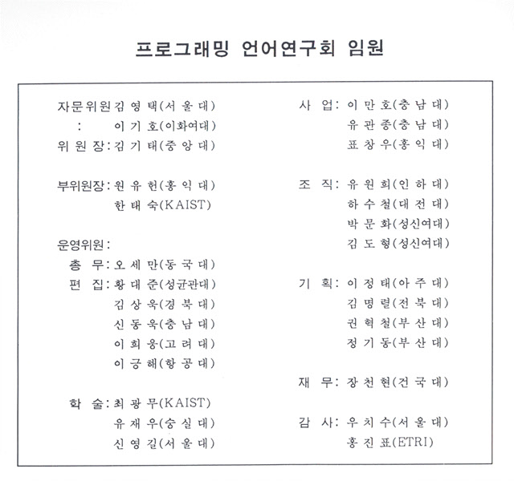
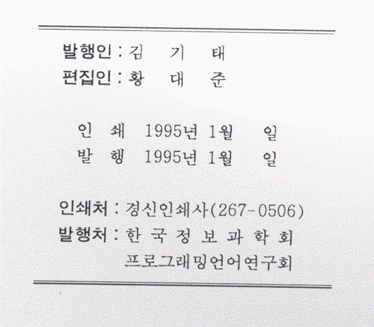

프로그래밍언어연구회지 제9권 제1호 (1995년 1월)
권두언:
김기태
논문 및 Survey
병렬 객체 지향 프로그래밍을 위한 C++ 언어의 확장
낭종호 (서강대학교)
객체 지향 병행 언어
정낙주, 신동욱 (충남대학교)
특별기고
C++와 Software++
신동욱 (충남대학교)
기행기
동경대 연수를 다녀와서
류기열 (아주대학교)


프로그래밍언어 연구회